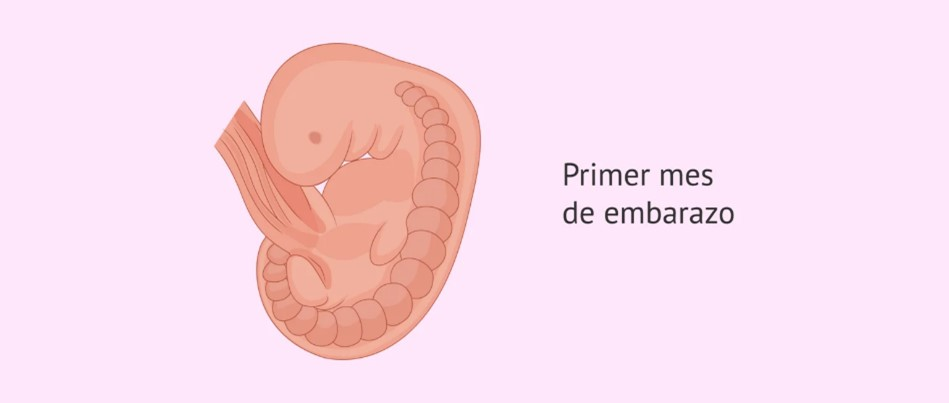
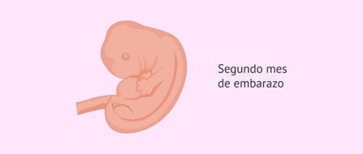
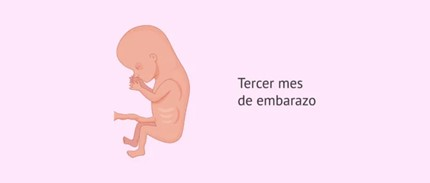
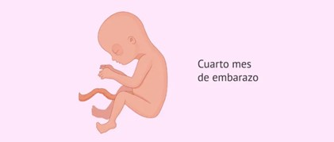
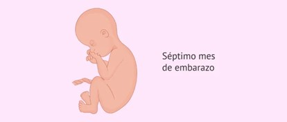
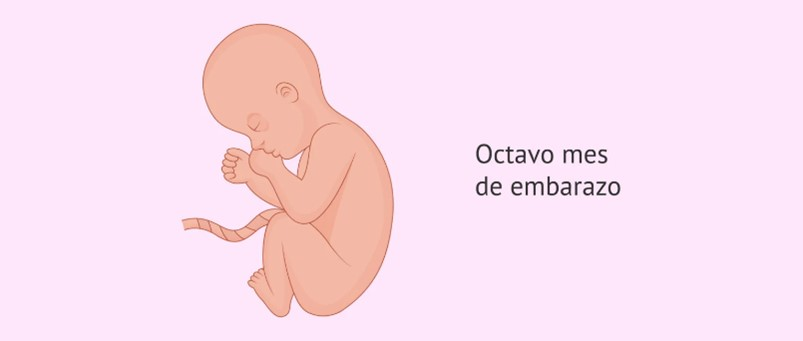
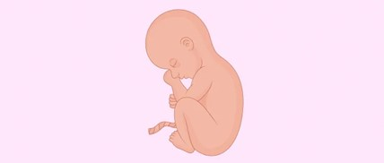
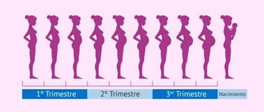

HEALTH BREEDING:
Primer mes de embarazo:
A lo largo de los 9 meses de embarazo el bebé va formándose, desarrollándose y creciendo dentro del vientre materno hasta que llega el momento del nacimiento. Del mismo modo, el cuerpo de la mujer y los síntomas que siente van cambiando a medida que avanzan las semanas de embarazo.Mostrar más
Si se mantienen varias relaciones sexuales durante los días fértiles de la mujer para buscar el embarazo, es habitual que no se conozca con exactitud cuándo ha ocurrido la concepción y el inicio exacto del embarazo. Sin embargo, es más fácil que la mujer sepa cuándo le bajó la última regla (fecha de última menstruación o FUR).
Por ello, la FUR es la fecha que se suele tomar como referencia y, por tanto, la primera semana de gestación, en realidad, se corresponde con la semana en la que la mujer tuvo la última menstruación.
El embrión proseguirá su camino hacia el útero, donde implantará, aproximadamente, unos 7-9 días después de la ovulación. En este momento, el embrión tiene entre 6 y 8 días de desarrollo. Empezará así la liberación de la hormona hCG, que es la hormona detectada por los test de embarazo.
Es posible que, debido al aumento de la hormona hCG (la hormona del embarazo), la mujer empiece a notar algunos síntomas en este primer mes, pero de forma muy suave.
42 minutes ago
Por ello, la FUR es la fecha que se suele tomar como referencia y, por tanto, la primera semana de gestación, en realidad, se corresponde con la semana en la que la mujer tuvo la última menstruación.
El embrión proseguirá su camino hacia el útero, donde implantará, aproximadamente, unos 7-9 días después de la ovulación. En este momento, el embrión tiene entre 6 y 8 días de desarrollo. Empezará así la liberación de la hormona hCG, que es la hormona detectada por los test de embarazo.
Es posible que, debido al aumento de la hormona hCG (la hormona del embarazo), la mujer empiece a notar algunos síntomas en este primer mes, pero de forma muy suave.

Liked by
user123 and
273 others
HEALTH BREEDING:
Segundo mes de embarazo:
Tras la implantación, se producirá la gastrulación, mediante la cual las células del disco embrionario darán lugar a 3 capas diferenciadas: ectodermo, mesodermo y endodermo. Estas tres capas embrionarias formarán todos los tejidos y órganos del bebé.Mostrar más
Es un mes de mucha evolución en el que el corazón primitivo, incluso, comienza a latir en la semana 6 de gestación
La barriga todavía no se nota, aunque es posible que la mujer empieza a sentir ya algunos síntomas como náuseas, vómitos, cansancio o sensibilidad mamaria.
También puede ocurrir que la gestación avance sin demasiados síntomas, pero ello no es indicativo de complicación: simplemente significa que hay mujeres que padecen los síntomas de forma más suave.
37 minutes ago
La barriga todavía no se nota, aunque es posible que la mujer empieza a sentir ya algunos síntomas como náuseas, vómitos, cansancio o sensibilidad mamaria.
También puede ocurrir que la gestación avance sin demasiados síntomas, pero ello no es indicativo de complicación: simplemente significa que hay mujeres que padecen los síntomas de forma más suave.

Liked by
user123 and
113 others
HEALTH BREEDING:
Tercer mes de embarazo:
A partir de este mes finaliza el periodo de embrión y comienza el periodo fetal, por lo que el embrión pasa a denominarse feto. En el tercer mes de embarazo, el futuro bebé forma todos sus órganos, aunque, por el momento, no están desarrollados del todo. Falta que maduren y acaben de evolucionar correctamente.Mostrar más
A lo largo de estas 4 semanas, el feto crece hasta los 7 cm y llegará a pesar unos 8-14 gramos, aproximadamente.
Además, al finalizar este mes, es habitual que comiencen a reducirse los molestos síntomas causados por la hormona hCG, como las náuseas. El motivo es que la concentración de esta hormona alcanza un pico en la semana 12, pero luego comienza a descender paulatinamente.
33 minutes ago

HEALTH BREEDING
Cuarto mes de embarazo:
En este cuarto mes de gestación, el feto se cubre de lanugo, un vello muy fino que recubre su piel y que actúa de conservador del calor corporal. Sus ojos son particularmente grandes, aún los mantiene cerrados y están muy separados entre sí. Sin embargo, la forma de la cara ya está definida y se puede distinguir perfectamente el cuello que separa la cabeza del resto del cuerpo.Mostrar más
El intestino fetal comienza a acumular una sustancia espesa denominada meconio, que constituirá las primeras heces del bebé que expulsará tras el nacimiento.
Además, en la semana 16 de embarazo, aparecen los pliegues epidérmicos en las palmas de las manos y en los dedos del bebé, lo que serán sus huellas dactilares.
El tamaño del feto cuando finaliza el cuarto mes de gestación puede ser de unos 18 cm y su peso será de unos 100 g.
31 minutes ago
HEALTH BREEDING:
Quinto mes de embarazo:
Uno de los primeros cambios en este periodo de gestación es la aparición de la vérnix caseosa, una sustancia grasa y blanquecina que protegerá la piel del bebé.Mostrar más
Por otro lado, el feto empieza a percibir sonidos como la voz materna, por lo que puede ser interesante estimular esta capacidad. Además, las 4 cavidades cardíacas (2 aurículas y 2 ventrículos) se delimitan en este mes y el corazón fetal ya late con fuerza.
Al finalizar el quinto mes de gestación, el bebé puede llegar hasta los 25 centímetros de longitud, aproximadamente, y a los 300 g de peso.
Es posible que la embarazada note que, cuando se tumba, el feto se mueve mucho más y con más energía. Esto se debe a que el bebé se encaja mejor en la pelvis materna cuando la mujer está de pie. Por esta razón, sus movimientos pueden disminuir considerablemente, mientras que aumentan cuando la embarazada está en posición horizontal (tumbada). Puede que el ombligo de la mujer se aplane o empiece a salirse hacia afuera. Si es el caso, volverá a su aspecto habitual después de dar a luz. La embarazada ya no sentirá náuseas ni vómitos, aunque puede que tenga otro tipo de molestias, tales como ardores de estómago y dolores de espalda
30 minutes ago
Es posible que la embarazada note que, cuando se tumba, el feto se mueve mucho más y con más energía. Esto se debe a que el bebé se encaja mejor en la pelvis materna cuando la mujer está de pie. Por esta razón, sus movimientos pueden disminuir considerablemente, mientras que aumentan cuando la embarazada está en posición horizontal (tumbada). Puede que el ombligo de la mujer se aplane o empiece a salirse hacia afuera. Si es el caso, volverá a su aspecto habitual después de dar a luz. La embarazada ya no sentirá náuseas ni vómitos, aunque puede que tenga otro tipo de molestias, tales como ardores de estómago y dolores de espalda
HEALTH BREEDING:
Sexto mes de embarazo:
La evolución del bebé pasa por medir de 25 cm a 35 cm, aproximadamente, y de pesar cerca de 300 gramos hasta unos 750 gramos.Mostrar más
Al reconocer los sonidos claramente, responde perfectamente a los estímulos como, por ejemplo, la música. De este modo, se puede comprobar cómo el feto se mueve cuando escucha música, como respuesta al estímulo sonoro que está recibiendo.
En cuanto al pelo del futuro bebé, ya se le han formado las cejas, el cabello y las pestañas. Su piel empieza a volverse más opaca, cogiendo consistencia. El bebé puede abrir y cerrar los ojos, además de hacer gestos como sacar la lengua. Las proporciones de su cuerpecito empiezan a igualarse en relación a su cabeza. Cada vez está mejor formado y se parece más al futuro recién nacido.
La barriga ya debe ser bastante voluminosa, por lo que es probable que la mujer se sienta cansada, tenga dolores de espalda, molestias o incomodidades en ciertas posturas y algo de hinchazón en piernas, tobillos y pies.
27 minutes ago
En cuanto al pelo del futuro bebé, ya se le han formado las cejas, el cabello y las pestañas. Su piel empieza a volverse más opaca, cogiendo consistencia. El bebé puede abrir y cerrar los ojos, además de hacer gestos como sacar la lengua. Las proporciones de su cuerpecito empiezan a igualarse en relación a su cabeza. Cada vez está mejor formado y se parece más al futuro recién nacido.
La barriga ya debe ser bastante voluminosa, por lo que es probable que la mujer se sienta cansada, tenga dolores de espalda, molestias o incomodidades en ciertas posturas y algo de hinchazón en piernas, tobillos y pies.

HEALTH BREEDING:
Séptimo mes de embarazo:
Empieza el último trimestre de embarazo y el desarrollo fetal es ya avanzado. Por ello, es normal que la mujer sienta mayor cansancio y pesadez. Además, a la embarazada le ...Mostrar más
costará más dormir, hacer ciertos movimientos como atarse los cordones o agacharse a recoger cosas del suelo. Adicionalmente, es probable que haya más hinchazón en pies y tobillos.
En este periodo de gestación, el esqueleto fetal se hace más consistente. La grasa ya empieza a acumularse debajo de la piel del bebé, lo que le permitirá controlar la temperatura tras el nacimiento. En este mes, la longitud del feto alcanzará los 40 cm, aproximadamente, y puede llegar a sobrepasar ligeramente los 1100 gramos.
Además, al finalizar este mes, es habitual que comiencen a reducirse los molestos síntomas causados por la hormona hCG, como las náuseas. El motivo es que la concentración de esta hormona alcanza un pico en la semana 12, pero luego comienza a descender paulatinamente.
22 minutes ago
En este periodo de gestación, el esqueleto fetal se hace más consistente. La grasa ya empieza a acumularse debajo de la piel del bebé, lo que le permitirá controlar la temperatura tras el nacimiento. En este mes, la longitud del feto alcanzará los 40 cm, aproximadamente, y puede llegar a sobrepasar ligeramente los 1100 gramos.
Además, al finalizar este mes, es habitual que comiencen a reducirse los molestos síntomas causados por la hormona hCG, como las náuseas. El motivo es que la concentración de esta hormona alcanza un pico en la semana 12, pero luego comienza a descender paulatinamente.

HEALTH BREEDING:
Octavo mes de embarazo:
El bebé comienza a perder el lanugo que cubría su cuerpo y sigue aumentando de peso y tamaño, por lo que se siguen limitando sus movimientos y, al mismo tiempo, no deja de presionar, ...Mostrar más
cada vez más, la vejiga materna. A lo largo de este mes, el bebé alcanzará cerca del 50% del peso total que tendrá al nacimiento.
En este mes de embarazo los movimientos del bebé ya sean visibles por fuera del abdomen materno, lo que será realmente especial.
Por otro lado, su piel va adquiriendo cada vez un aspecto más liso y sonrosado, debido a que sigue la acumulación de grasa subcutánea. Pese a que el bebé está prácticamente formado, sus pulmones aún no están maduros y, si tuviera lugar un parto prematuro, no podrían respirar por sí mismos.
Es muy posible que la mujer sienta acidez o que esté estreñida durante esta fase del embarazo. Todos estos síntomas son muy habituales y se deben a que el aumento del tamaño del útero hace las digestiones más difíciles, lentas y pesadas.
El cansancio durante este último período del embarazo también es bastante normal. Esto ocurre no solo por el aumento de peso, que suele fatigar mucho, sino porque las dificultades para dormir y descansar ya serán notables.
Se recomienda tomar mucho calcio, hierro, ácido fólico, proteínas y vitamina C. El estado de gestación es muy avanzado, así que la embarazada debe cuidarse mucho.
14 minutes ago
Por otro lado, su piel va adquiriendo cada vez un aspecto más liso y sonrosado, debido a que sigue la acumulación de grasa subcutánea. Pese a que el bebé está prácticamente formado, sus pulmones aún no están maduros y, si tuviera lugar un parto prematuro, no podrían respirar por sí mismos.
Es muy posible que la mujer sienta acidez o que esté estreñida durante esta fase del embarazo. Todos estos síntomas son muy habituales y se deben a que el aumento del tamaño del útero hace las digestiones más difíciles, lentas y pesadas.
El cansancio durante este último período del embarazo también es bastante normal. Esto ocurre no solo por el aumento de peso, que suele fatigar mucho, sino porque las dificultades para dormir y descansar ya serán notables.
Se recomienda tomar mucho calcio, hierro, ácido fólico, proteínas y vitamina C. El estado de gestación es muy avanzado, así que la embarazada debe cuidarse mucho.

Liked by
user123 and
100 others
HEALTH BREEDING:
Noveno mes de embarazo:
Al finalizar el noveno mes de embarazo, el feto puede medir cerca de 50 cm y, su peso, será de unos 2500 g de media. Durante este periodo, el bebé encaja su cabecita en la pelvis materna, preparándose para el parto.Mostrar más
La piel del bebé ya no está arrugada y es más suave, debido a la grasa que se ha ido acumulando debajo de ella y a la desaparición, casi completa, del lanugo. El color de la piel ya no es tan rojo, sino que empieza a sonrojarse y se asemeja más al color definitivo que tendrá en el momento del parto.
Como hemos comentado, desde hace ya algunas semanas, los movimientos del bebé son menores debido a su aumento de tamaño y de peso, pero esto no significa que la embarazada no sienta la presencia de su futuro hijo. De hecho, no debe pasar ni un solo día en que no se sienta al bebé. No obstante, es habitual que ahora los movimientos se sientan más bruscos, como si fuesen patadas, ya que el bebé tiene muy poco espacio para moverse.
Este mes puede hacerse especialmente largo y molesto para la madre, aunque lo vive con mucha ilusión: el parto se acerca y son muchas las ganas de verle la carita al bebé.
10 minutes ago
Como hemos comentado, desde hace ya algunas semanas, los movimientos del bebé son menores debido a su aumento de tamaño y de peso, pero esto no significa que la embarazada no sienta la presencia de su futuro hijo. De hecho, no debe pasar ni un solo día en que no se sienta al bebé. No obstante, es habitual que ahora los movimientos se sientan más bruscos, como si fuesen patadas, ya que el bebé tiene muy poco espacio para moverse.
Este mes puede hacerse especialmente largo y molesto para la madre, aunque lo vive con mucha ilusión: el parto se acerca y son muchas las ganas de verle la carita al bebé.

HEALTH BREEDING:
El final del embarazo:
Es habitual que la mujer note unas fuertes contracciones, conocidas como contracciones de Braxton Hicks, que son contracciones diferentes a las de parto y que se producen como ...Mostrar más
preparación del organismo para cuando llegue el momento de dar a luz. Estas contracciones son indoloras (aunque pueden ser molestas), irregulares y no aumentan su frecuencia e intensidad, por lo que pueden distinguirse de las contracciones de parto verdaderas.
La rotura de aguas y, con ello, el parto, puede producirse en cualquier momento. La mujer debe tener lista la bolsa de maternidad (con todo lo necesario para ella y para el bebé durante los días de ingreso) y acudir al hospital.
Si, a partir de la semana 42, el bebé no ha visto la luz, lo habitual es que el especialista encargado del seguimiento del embarazo provoque el parto, ya que el futuro hijo o hija está listo para nacer y puede suponer un riesgo que se quede más tiempo del necesario en el vientre de la madre.
7 minutes ago
La rotura de aguas y, con ello, el parto, puede producirse en cualquier momento. La mujer debe tener lista la bolsa de maternidad (con todo lo necesario para ella y para el bebé durante los días de ingreso) y acudir al hospital.
Si, a partir de la semana 42, el bebé no ha visto la luz, lo habitual es que el especialista encargado del seguimiento del embarazo provoque el parto, ya que el futuro hijo o hija está listo para nacer y puede suponer un riesgo que se quede más tiempo del necesario en el vientre de la madre.
HEALTH BREEDING-Medic
HEALTH BREEDING
Suggestions for You
usernick16
Followed by user1, user2 and 9 others
usernick17
Followed by user1, user2 and 3 others
usernick18
Followed by user1 and 9 others
usernick19
Followed by user1 and 3 others
usernick20
Followed by user1 and 6 others